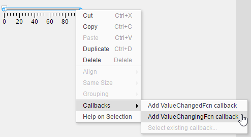
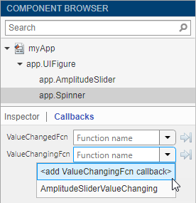
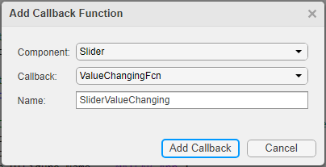
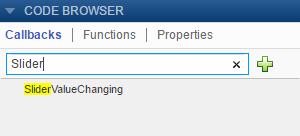
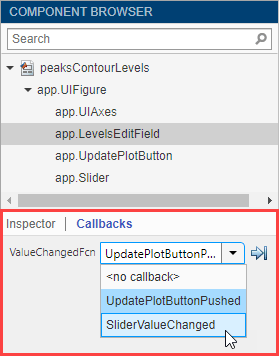
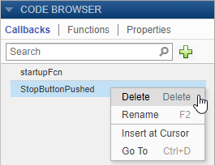

Callbacks in App Designer
A callback is a function that executes when a user interacts with a UI component in your app. You can use callbacks to program the behavior of your app. For example, you can write a callback that plots some data when an app user clicks a button, or a callback that moves the needle of a gauge component when a user interacts with a slider.
Most components have at least one callback, and each callback is tied to a specific interaction with the component. However, some components, such as labels and lamps, do not have callbacks because those components only display information. To see the list of callbacks that a component supports, select the component and click the Callbacks tab in the Component Browser.
Create Callback Functions
There are several ways to create a callback for a UI component. You can take different approaches depending on where you are working in App Designer. Choose the most convenient approach from this list:
Right-click a component in the canvas, Component Browser, or App Layout pane, and select Callbacks > Add (callback property) callback.

Select the Callbacks tab in the Component Browser. The left side of the Callbacks tab shows the supported callback properties. The drop-down list next to each callback property allows you to specify a name for the callback function or to select a default name in angle brackets <>. If your app has existing callbacks, the drop-down list includes those callbacks. Select an existing callback when you want multiple UI components to execute the same code.

In code Code View, in the Editor tab, click
 Callback. Alternatively, in the Code
Browser pane, on the Callbacks tab,
click the
Callback. Alternatively, in the Code
Browser pane, on the Callbacks tab,
click the  button.
button.
Specify these options in the Add Callback Function dialog box:
Component — Specify the UI component that executes the callback.
Callback — Specify the callback property. The callback property maps the callback function to a specific interaction. Some components have more than one callback property available. For example, sliders have two callback properties:
ValueChangedFcnandValueChangingFcn. TheValueChangedFcncallback executes after the user moves the slider and releases the mouse. TheValueChangingFcncallback for the same component executes repeatedly while the user moves the slider.Name — Specify a name for the callback function. App Designer provides a default name, but you can change it in the text field. If your app has existing callbacks, the Name field has a drop-down arrow next to it, indicating that you can select an existing callback from a list.
Program Callback Functions
When you create a callback for a component, App Designer generates a callback function in Code View and places your cursor in the function. Write code in this callback function to program the callback behavior.
Callback Input Arguments
All callback functions that App Designer creates have these input arguments in the function signature:
app— Theappobject. Use this object to access UI components in the app as well as other variables stored as properties.event— An object that contains specific information about the app user's interaction with the UI component.
The app argument provides the app object
to your callback. You can access any component (and all component-specific
properties) within any callback by using this
syntax:
app.Component.Property
For example, this command sets the Value property of a
gauge to 50. In this case, the name of the gauge is
PressureGauge:
app.PressureGauge.Value = 50;
The event argument provides an object that has different
properties, depending on the specific callback that is executing. The object
properties contain information that is relevant to the type of interaction that
the callback is responding to. For example, the event
argument in a ValueChangingFcn callback of a slider
contains a property called Value. That property stores the
slider value as the user moves the thumb (before the user releases the mouse).
Here is a slider callback function that uses the event
argument to make a gauge track the value of the
slider:
function SliderValueChanging(app,event) latestvalue = event.Value; % Current slider value app.PressureGauge.Value = latestvalue; % Update gauge end
event argument for a specific
component's callback function, see the property page for that component.
Right-click the component, and select Help on
Selection to open the property page. For a list of property
pages for all UI components, see App Building Components.Share Data Between Callback Functions
To store data that needs to be accessed by multiple callbacks, create a property. Properties contain data that belongs to the app. You can create private properties to store data to be shared within the app only, or public properties to store data to be shared outside of the app (for example, with a script, function, or other app that needs access to the data).
Create a public or private property by clicking the
 Property button in the Editor tab in
Code View. Enter a name for your property. You can then
assign and access the property value within all of your app callbacks using the
syntax
Property button in the Editor tab in
Code View. Enter a name for your property. You can then
assign and access the property value within all of your app callbacks using the
syntax app.PropertyName.
For more information, see Share Data Within App Designer Apps.
Share Callbacks Between Multiple Components
Sharing callbacks between components is useful when you want to offer multiple ways of doing something in your app. For example, your app can respond the same way when a user clicks a button or presses the Enter key in an edit field.
You can create a single shared callback for multiple selected components with a callback type in common. For example, in an app with an edit field and a slider, you can select both components, right-click one of them, and select Callbacks > Add ValueChangingFcn callback. App Designer creates a single new callback and assigns it to both the edit field and the slider.
Alternatively, after you create a callback for one component, you can share it by assigning it to a second component. Right-click the second component in the Component Browser and select Callbacks > Select existing callback. When the Select Callback Function dialog box displays, select the existing callback from the Name drop-down list.
For an example of an app that shares a callback between two components, see Use One Callback for Multiple App Designer Components.
Create and Assign Callbacks Programmatically
You can also create and assign callback functions programmatically in your app
code. Use this method to create a callback for a component or graphics object that
does not appear in the Component Browser. For example, you can
programmatically assign a callback to a dialog box that you create in your app code,
or to a Line object that you plot in a UIAxes
component.
Create the callback function as a private function by selecting Function > Private Function in the Editor tab of the toolstrip. The function
must have app, src, and
event as the first three arguments. Here is an example of a
callback written as a private
function:
methods (Access = private) function myclosefcn(app,src,event) disp('Have a nice day!'); end end
Assign the callback function to a component by specifying the callback property
value as a handle to your callback function using the syntax
@app.FunctionName. For example,
this code creates an alert dialog box that assigns the myclosefcn
function to the CloseFcn callback property. The function executes
when the dialog box
closes.
uialert(app.UIFigure,"File not found","Alert", ... "CloseFcn",@app.myclosefcn);
To write a callback function that accepts additional input arguments, specify the
additional arguments after the first three arguments. For example, this callback
accepts one additional input,
name:
methods (Access = private) function displaymsg(app,src,event,name) msg = name + " dialog box closed"; disp(msg); end end
To assign this callback to a component, specify the component callback property as cell array. The first element in the cell array must be the function handle. Subsequent elements must be the additional input values. For example:
uialert(app.UIFigure,"File not found","Alert", ... "CloseFcn",{@app.displaymsg,"Alert"});
For more information, see Add UI Components to App Designer Programmatically.
Search for Callbacks in Your Code
If your app has a lot of callbacks, you can quickly search and navigate to a specific callback by typing part of the name in the search bar at the top of the Callbacks tab in the Code Browser. After you begin typing, the Callbacks pane clears, except for the callbacks that match your search.

Click a search result to scroll the callback into view. Right-clicking a search result and selecting Go To places your cursor in the callback function.
Change or Disconnect Callbacks
To assign a different callback to a component, select the component in the Component Browser. Then click the Callbacks tab and select a different callback from the drop-down list. The drop-down list displays only the existing callbacks.

To disconnect a callback that is shared with a component, select the component in the Component Browser. Then click the Callbacks tab and select <no callback> from the drop-down menu. Selecting this option only disconnects the callback from the component. It does not delete the function definition from your code, nor does it disconnect the callback from any other components. After you disconnect a callback, you can create a new callback for the component or leave the component without a callback function.
Delete Callbacks
If your code contains a callback function that is not being used by any components in your app, you can delete the function entirely. Delete a callback by right-clicking the callback in the Callbacks tab of the Code Browser and selecting Delete from the context menu.

Example: App with a Slider Callback
This app contains a gauge that tracks the value of a slider as the user moves the thumb. The ValueChangingFcn callback for the slider gets the current value of the slider from the event argument. Then it moves the gauge needle to that value.